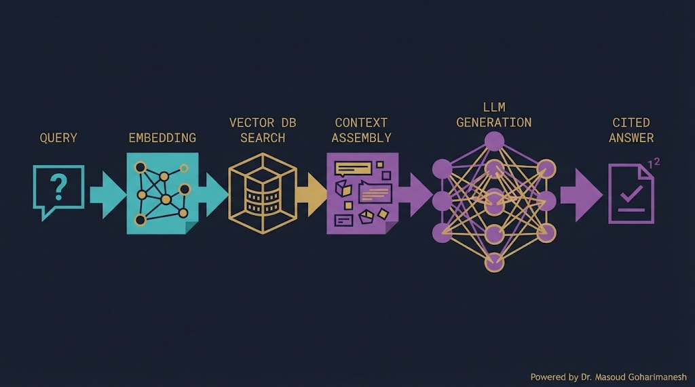
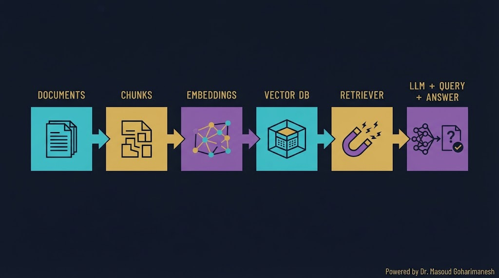
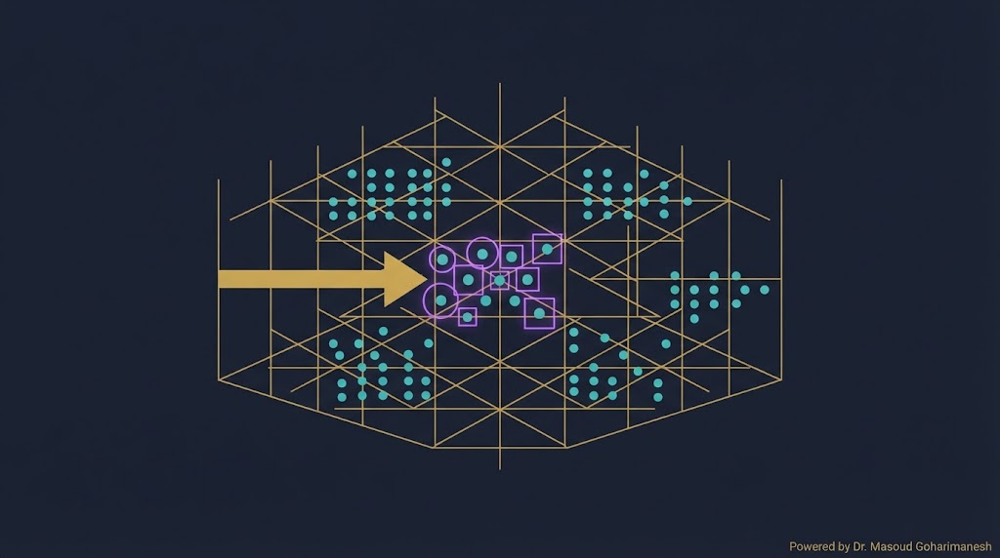
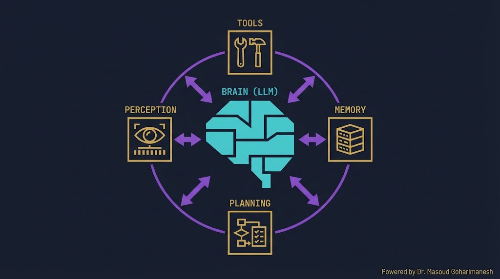
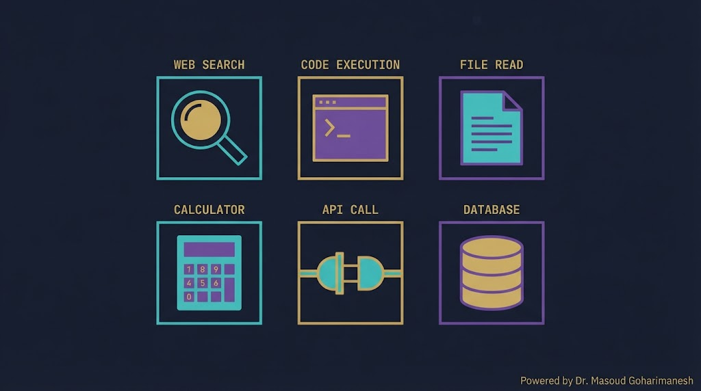
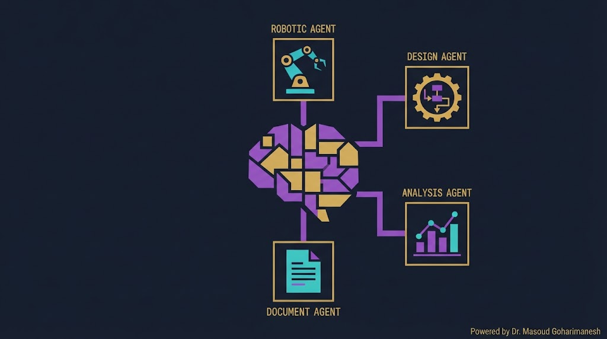

ستاره این جلسه
به یاد شهدای والامقام
ستاره این جلسه
به یاد شهدای والامقامدانشمندان و دانشآموزان
ایران عزیز
ستاره این جلسه
به یاد شهدای والامقامRetrieval-Augmented Generation · AI Agents
From Knowledge to Autonomous Action
LLM، Prompt Engineering، مدلهای زبانی
RAG، Vector DB، AI Agent
✅ مشکل دانش محدود LLM
✅ RAG — Pipeline کامل
✅ Vector Database و Embeddings
✅ LangChain و LlamaIndex
✅ AI Agent — Tool Use، Memory، Planning
✅ Multi-Agent Systems
LLM که در جلسه قبل دیدیم، یک مشکل اساسی دارد: دانش آن محدود به داده آموزش است. اگر از ChatGPT درباره یک مقاله جدید ۲۰۲۵ بپرسید، نمیداند. اگر درباره یک فایل داخلی شرکت بپرسید، نمیداند. و اگر اطلاعات نادرست بدهد، Hallucination رخ میدهد.
RAG این مشکل را حل میکند: قبل از پاسخ، اطلاعات مرتبط را از یک منبع خارجی بازیابی میکنیم. و AI Agent یک قدم فراتر میرود — مدل را قادر میکند تا خودش تصمیم بگیرد، ابزار استفاده کند، و بهطور مستقل کار کند.

اتصال به دانش خارجی
عمل مستقل با ابزار
ذخیره و جستوجوی برداری
چند Agent همکار
LLM فقط تا تاریخ آموزش میداند
مثال: ChatGPT نمیداند مقاله دیروز چه بود
اطلاعات نادرست با اطمینان تولید میکند
مثال: ارجاع به مقالاتی که وجود ندارند
نمیتوان داده داخلی را به LLM عمومی داد
مثال: فایلهای محرمانه شرکت
RAG (Retrieval-Augmented Generation — تولید افزودهشده با بازیابی) در سال ۲۰۲۰ توسط Facebook AI معرفی شد. ایده ساده: قبل از پاسخ، اسناد مرتبط را پیدا کن، به LLM بده، پاسخ بخواه.

Documents → Chunks → Embeddings → Vector DB
Query → Embed → Search → Augment → LLM → Answer
یک سؤال بپرسید و مراحل RAG را ببینید.
برای جستوجوی معنایی، اسناد را به بردار تبدیل میکنیم و در یک دیتابیس برداری ذخیره میکنیم.

سبک، متنباز، برای پروژههای کوچک
ابری، مقیاسپذیر، صنعتی
متنباز، با فیلتر متادیتا
سریع، Rust، متنباز
یک کتاب ۵۰۰ صفحهای را نمیتوان بهصورت یکجا به LLM داد. باید آن را به قطعات کوچک (chunk) تقسیم کنیم.
معمولاً ۵۰۰ تا ۱۰۰۰ توکن
10-20% بین chunkها — حفظ زمینه
بر اساس پاراگراف یا بخش
یک query وارد کنید و نزدیکترین اسناد را ببینید.
اسناد خام
تقسیم به قطعات
تبدیل به بردار
ذخیره بردارها
جستوجوی مرتبطها
پاسخ با LLM
فریمورک همهکاره برای ساخت اپلیکیشنهای LLM
RAG، Agent، Memory، Tools
تخصصی برای RAG و اتصال داده
بهترین برای ساخت Knowledge Base
from langchain_openai import ChatOpenAI from langchain_community.vectorstores import Chroma from langchain_openai import OpenAIEmbeddings embeddings = OpenAIEmbeddings() vectorstore = Chroma.from_documents(docs, embeddings) retriever = vectorstore.as_retriever() docs = retriever.get_relevant_documents("قانون هوک") llm = ChatOpenAI() answer = llm.invoke(f"بر اساس: {docs}\n پاسخ بده")
یک Agent یک سامانه هوشمند است که میتواند:

استفاده از ابزار — جستوجو، کد، API
حافظه — ذخیره تجربه
برنامهریزی — تصمیمگیری
حلقه — مشاهده، تفکر، اقدام
یک مأموریت بدهید و ببینید Agent چطور آن را انجام میدهد.
Agent میتواند در حین کار، ابزارهای خارجی را فراخوانی کند. این همان چیزی است که ChatGPT را از یک «چتبات» به یک «دستیار» تبدیل میکند.

جستوجوی اینترنت
اجرای کد Python
خواندن فایل
محاسبات دقیق
فراخوانی API خارجی
کوئری دیتابیس
حافظه کوتاهمدت — همان Context Window
مثال: مکالمه فعلی
حافظه بلندمدت — ذخیره در Vector DB
مثال: اطلاعات کاربر
حافظه رویدادی — تجربههای گذشته
مثال: چه کارهایی قبلاً کردم؟
Agent قبل از عمل، برنامه میسازد. این همان چیزی است که به آن قدرت «تفکر» میدهد.
Reasoning + Acting — فکر کن، عمل کن، تکرار
Chain-of-Thought — استدلال گامبهگام
درخت تفکر — انشعاب و بررسی
بازبینی خود — بررسی نتایج
به جای یک Agent تنها، چند Agent تخصصی با هم کار میکنند.

Agent اصلی — تقسیم وظایف
جستوجو و جمعآوری
نوشتن کد
نوشتن گزارش

RAG روی مقالات خودتان
Agent + CAD API
Agent + Python
Agent + سنسورها
# نصب pip install langchain langchain-openai chromadb from langchain_openai import ChatOpenAI, OpenAIEmbeddings from langchain_community.vectorstores import Chroma from langchain.text_splitter import RecursiveCharacterTextSplitter from langchain.chains import RetrievalQA # ۱. بارگذاری سند with open('paper.txt') as f: text = f.read() # ۲. Chunking splitter = RecursiveCharacterTextSplitter( chunk_size=500, chunk_overlap=50) chunks = splitter.split_text(text) # ۳. Embeddings + Vector DB embeddings = OpenAIEmbeddings() vectorstore = Chroma.from_texts(chunks, embeddings) # ۴. Retriever retriever = vectorstore.as_retriever(search_kwargs={"k": 3}) # ۵. LLM llm = ChatOpenAI(model="gpt-4o", temperature=0) # ۶. Chain qa_chain = RetrievalQA.from_chain_type( llm=llm, retriever=retriever, return_source_documents=True) result = qa_chain.invoke({"query": "قانون هوک چیست؟"}) print(result["result"]) print(result["source_documents"])
from langchain.agents import initialize_agent, Tool from langchain.agents import AgentType from langchain_openai import ChatOpenAI from langchain.tools import DuckDuckGoSearchRun from langchain.utilities import PythonREPL # ابزارها search = DuckDuckGoSearchRun() python_repl = PythonREPL() tools = [ Tool(name="Search", func=search.run, description="جستوجوی اینترنت"), Tool(name="Python", func=python_repl.run, description="اجرای کد Python"), Tool(name="Calculator", func=lambda x: eval(x), description="محاسبات ریاضی") ] # Agent llm = ChatOpenAI(model="gpt-4o", temperature=0) agent = initialize_agent( tools, llm, agent=AgentType.OPENAI_FUNCTIONS, verbose=True ) # اجرا result = agent.run( "قیمت فعلی فولاد را جستوجو کن و هزینه ۱۰۰ کیلو را حساب کن" ) print(result)
[AI] HW19 - نام - شماره دانشجویی به arcslab.uth@gmail.com
اتصال LLM به دانش خارجی
Chroma، Pinecone، Weaviate، Qdrant
Tools + Memory + Planning
جستوجو، کد، محاسبه، API
Orchestrator + Specialist Agents
Next Session: Introduction to Scientific AI
• Scientific AI — AI برای علم
• Neural Operators
• Surrogate Models
• Physics-Informed ML
• کاربرد در مکانیک